Career
R&D Engineer — InsightOS, Shanghai R&D Engineer — InsightOS
Robot media I/O, sensor synchronization, and cabinet-operation tooling.
01 / 09 — Profile
R&D engineer building dependable sensing and control infrastructure.
My goal
Industrial robot programs can contribute fast iteration, compute, operational data, and real failure cases; school research can contribute depth, open evaluation, and room to test new ideas. I want the two to change each other, not an application-only track centered on delivery.
Dedicated to extreme ownership and proactive problem-solving—taking one extra step when it improves the result.
Career
Robot media I/O, sensor synchronization, and cabinet-operation tooling.
Career
Industrial-wastewater vision PoCs and a floc-analysis handoff.
Career
ASEAN energy-system studies converted into model-ready data.
Volunteering
Coastal cleanup across Singapore’s north and east shores.
Education
GPA 4.61/5.0 — online Jun 2023–Jun 2024; in person Jun 2024–Mar 2025.
HIT project
Delayed observations, reward shaping, and dynamic-obstacle simulation.
HIT project
Agricultural RAG, 100+ questions, and prompt-injection tests.
HIT-period project
Terminology, localized prompts, reproducibility checks, and demos.
Social practice
HIT field-research team lead — second prize and key incubation team.
HIT project
First prize; selected for national-level continuation.
Education
Electrical Engineering — 86.95/100 — People’s Scholarship ×5.
02 / 09 — Current work
A reusable robot media runtime underneath perception, pose estimation, and contact.
Problem
Cameras and depth sensors move across devices; open-loop motion becomes brittle when target and robot frames drift.
Built
insightos:// routing.C++ — Linux — ROS2 — DDS — RGB-D — shared memory — REST/CLI
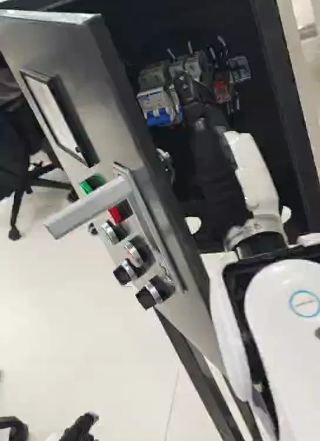
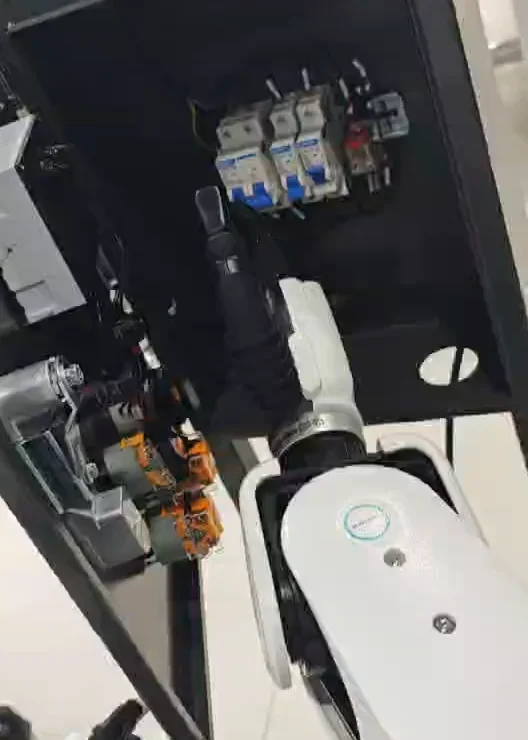
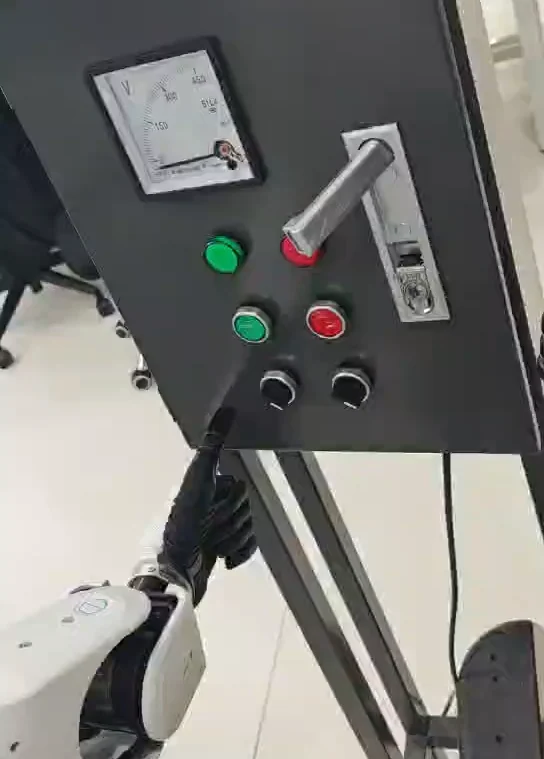
03 / 09 — Industrial computer vision
Implemented evidence, reported evaluation, and the next temporal study are kept distinct.
Problem / decision
Underwater frames are noisy and flocs overlap. The desktop PoC exposes the source frame, binary mask, thresholds, features, and a binary cue: coagulation sufficient or add more coagulant.
Implemented method
archived codeThe features were chosen to cover population, scale, shape, and coverage with inexpensive geometry. The archived classifier is binary, not a five-step dosing controller.
Experiment / reported result
PoC evidence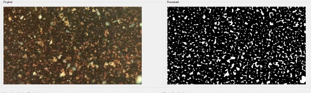
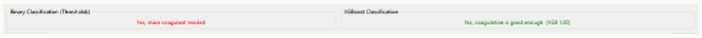
| Classifier | Accuracy | Recall | F1 |
|---|---|---|---|
| XGBoost | 88.5% | 87.3% | 87.9% |
| Threshold | 67.4% | 90.2% | 77.2% |
Research extension
reference results, not my experimentPearson screening is useful for the next study only when redundancy and dose relevance are both visible.
High pairwise values flag redundant descriptors and unstable attribution.
Association supports screening, not causality or a dosing optimum.
Estimate τ from HRT and training-only cross-correlation. Compare W = 2.5 h, 4 h, and 24 h as reference candidates; split by time/video/day and purge at least W+τ+H between folds.
PAC-dose correlations from the blue conference slide. Different variables and study conditions explain why these coefficients should not be merged with the matrix above.
Reference only: I used these findings but did not conduct the reported experiments. Correlation screening must be recomputed inside each training fold. TCN/Transformer and SHAP do not appear in the archived PoC.
04 / 09 — Climate analytics
Data contracts connect published assumptions to optimization and country-level mitigation choices.
Platform / problem
public contextThe Atlas is a decision-support platform for exploring country mitigation potential at different costs and how collaboration can unlock additional strategies.
Its pilot methodology focuses on technical potential at cost levels, translating national systems into comparable, optimization-ready cases.
My contribution
Method / data contract
internship artifacts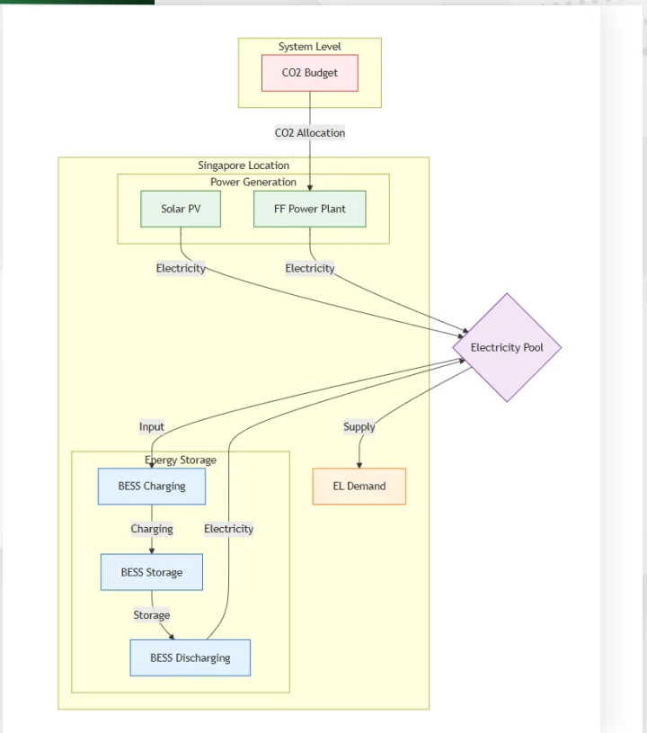
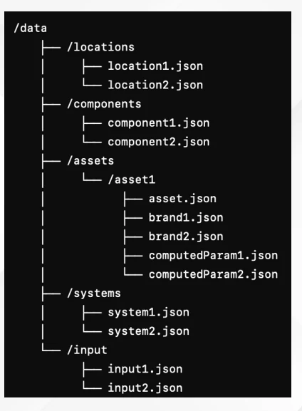
Experiment / scenario comparison
modeled outputWhat changes when Singapore and Indonesia are modeled as isolated systems versus an idealized collaboration?
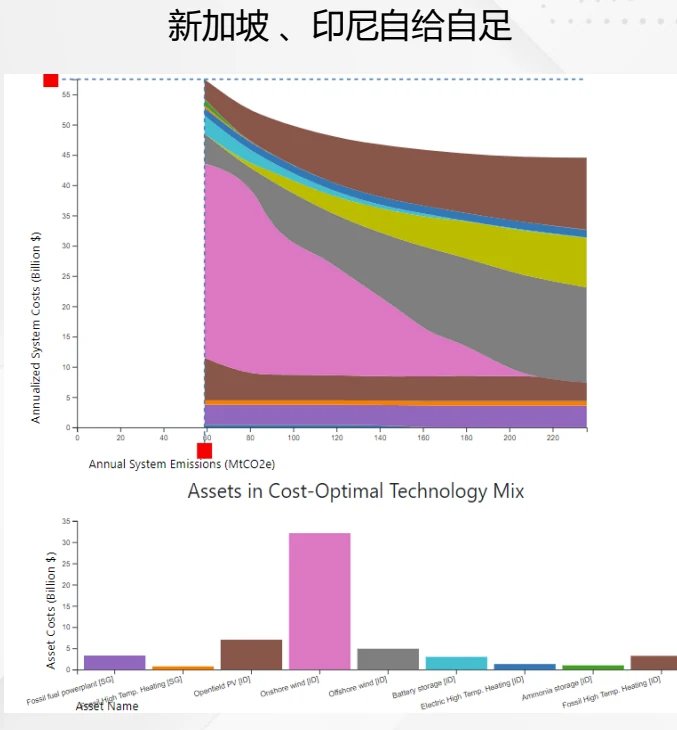
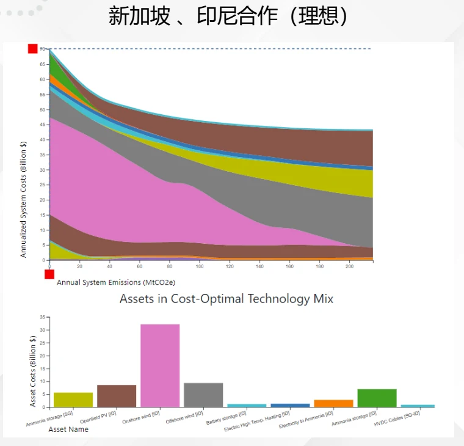
These are model outputs used to inspect scenario behavior, not observed forecasts. My contribution was data translation and workflow prototyping, not ownership of the Atlas or its full quantitative model.
05 / 09 — HIT capstone
Discrete DQN actions, delayed state estimates, and repeated simulation comparisons.
Problem / definition
A dynamic simulator injects observation delay while the agent must still reach the goal and avoid moving obstacles.
Method
Simulation
complete figure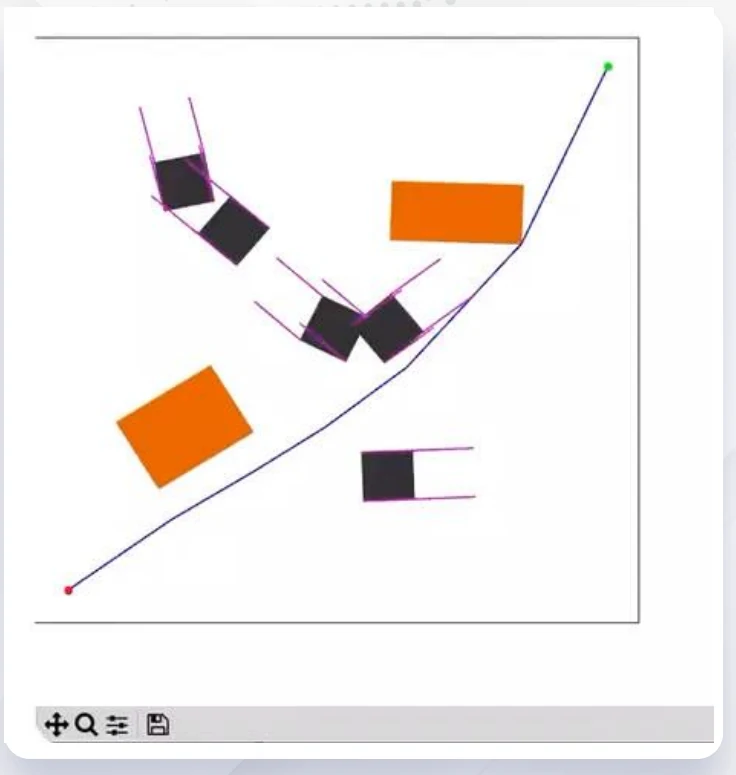
Learning curves
supplied artifact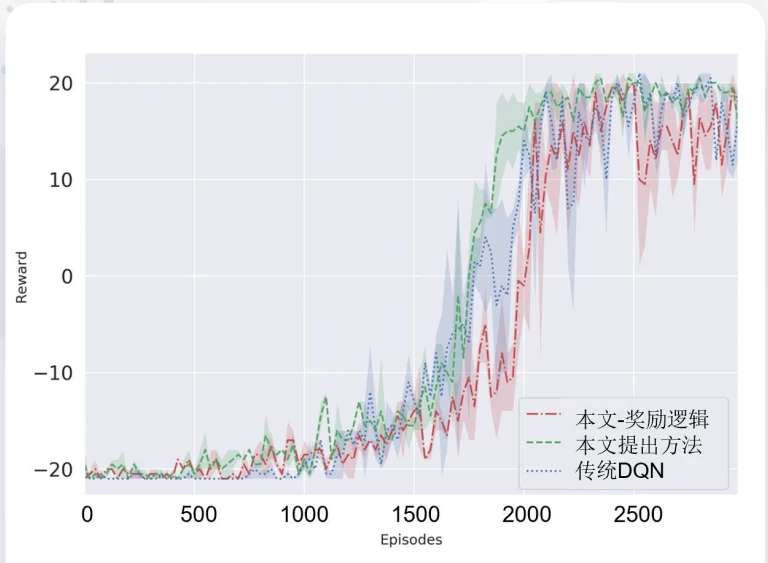
Experiment / reported mean
15 repetitions| Method | Success | Mean path length |
|---|---|---|
| Proposed | 98.1% | 29.113 |
| Without reward logic | 97.2% | 29.474 |
| Traditional DQN | 92.6% | 30.852 |
| Traditional Q-learning | 93.1% | 32.224 |
98.1% versus 92.6% is +5.5 percentage points (+5.9% relative). Values are transcribed from the capstone slide; raw logs are unavailable.
06 / 09 — HIT innovation project
A quality-gated multi-frame path retains usable history, fuses evidence, and recognizes a sequence.
Problem / contribution
The team system detected and matched text instances, retained the best adjacent observations, fused aligned features, and recognized the sequence.
Documented role: Transformer-inspired recognition and coupling recognition features to the upstream restoration network.
Original quality-gated pipeline — redrawn
team algorithmFaithful to the project flow: only a sufficiently good matched crop becomes the new reference; four saved support crops and the reference are fused before recognition.
Experiment definition
Exact sample counts, blur distribution, seeds, and raw predictions are not preserved.
Reported recognition accuracy
acceptance table| Method | Chinese | LSVT |
|---|---|---|
| Team method | 69.2% | 68.5% |
| SVTR-S | 69.0% | 68.2% |
The table is preserved evidence; raw predictions and an independent rerun were not supplied.
Perceivable qualitative outputs
team slide我是第一段文字哈哈哈哈
我是第三段文字呀呀呀
07 / 09 — Open work
Two merged vector-search changes, an agricultural KBQA assessment, and early prompt-engineering coursework.
Added distance metrics and filtering, with tests and examples around the new query behavior.
Added SQ/BQ vector-index quantization levels and corresponding distance constraints.
RAG knowledge base, closed/open questions, prompt injection, and jailbreak tests; résumé reports 100+ questions and 10+ attacks.
Proofreading, terminology/API alignment, prompt reproduction, and chatbot experiments. Exact contribution commits still need linking.
08 / 09 — Credentials
Seven professional certifications and two NVIDIA DLI course certificates visible in the supplied record.
09 / 09 — Questions
Systems engineering now; robot learning next. Keep the questions close to physical evidence.
Questions I’m chasing
What keeps me curious
Decentralized multi-agent infrastructure: a practical touchpoint is the ANP handle zyx.awiki.ai.
AI + formalized mathematics: still an early interest; current foundations are formal languages, context-free grammars, and propositional logic.
Slide 1 of 9: Profile